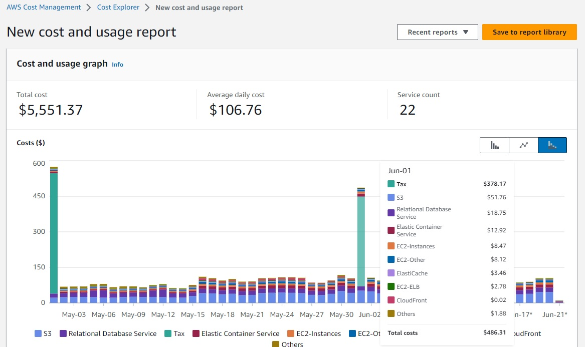

SCC
Brasil
os cloud gurus
Software Cloud Consulting
Your software development, cloud, consulting & shoring company
Cost optimization strategies

By Wolfgang Unger
Before we take a look how to save costs on AWS in a generic approach - since any
customer got different services running - your should take a look on your costs and
get an overview what are the cost expensive services.
Cost Analysis
You can use the AWS Cost Explorer to analyze usage and costs. There are are lot of filters to get a good overview on your expenses.
You can aggregate by Account our AWS Service level on high level but also filter on resource level like EC2 instance ID .

Try to figure out what are the most expensive resources or resource groups, this is where your should try to consider changes.
If you spend 4 $ monthly on Lambdas, it would be a waste of time, to develope or even consider measures to lower these costs.
You should for example know after your analyses:
EC2 Computing Costs 600$
Data transfer costs 120$
Storage Costs 400$
etc
Now we can take a closer look on the possibilities to save costs on AWS
Compute

Rightsizing
Use Trusted Advisor to find Low Utilization EC2 instances or RDS Idle Instances
Also use the Cloud Watch Metrics to check if your instances are oversized.
On Premise Admistrators tend to keep CPU Utilization low on the servers, to extend the lifespan, since the server is company property.
The average Utilization there is about 30%. You don't need to follow this approach with cloud instances, if the instance still performs good with 90% CPU Utilization, no need to upsize. Keep them under load, you pay for 100% Utilization, not just for 35%.
Autoscaling
Use horizantal scaling, not vertical scaling.
On Premise you cannot just launch new servers if it is Black Friday.
You have to calculate your usage on Peak time and do the guesswork to buy servers for your racks.
So normally there are oversized, run on low Utilization to be able to still work in the Peak times.
On AWS you should fine the right instance size for running your application without problems but with a high Utilization.
If you need more Compute Power, you can launch new instances with Autoscaling, based on metrics like CPU or networking or SQS messages for example.
You scale out if more servers are needed and you scale in when there is only a few users on the platform.
Important numbers to finetune here are Desired Count, Miminum Count and Maximum Count.
Reduce usage hours
On Premise nobody shuts down instances.
The only savings would be the electricity bill. You already paid your servers. In the cloud you pay per usage or demand.
Meaning if you use a instance just 8h a day, you can save 66% costs if you don't let it running 24h but just 8h.
Autoscaling was already mentioned you can scale down Groups of severs, who have to be online 24/7 down to 1 instance in the night, when there is low user activity.
Other instances you might shut down completly if there is no requirement for 24/7.
The instances will only be used from 8am to 6pm ? Shut them down the rest of the time.
You can automate this with tagging and lambas, systems manager or other approaches.
Also Terminate Any Unused Instances. Sometimes people launch an instance for testing something, but forgot to stop or terminate it. Stop and terminate anything which is not really needed.
For background tasks don't use 24/7 instances.
Use docker and for example AWS Batch. Fargate can also serve if you configure the task to stop after processing. If the job needs 2h to process, that's all you should pay for it.
Serverless is also a good approach on non-steady workloads.
You pay just for the processed time, not for a 24/7 instance.
This can be perfect for business logic ( from applications into lambda) or Databases linke Aurora Serverless or Dynamo.
Use Sport instances, reserved instance and saving plans
Spot instances are unused AWS instances that can cost up to 90% less than on-demand instances. You can bid on AWS instances, with the price being determined by supply and demand
But don't use them for important workloads which must not be interrupted, Spot instances may be disconnected.
With reserved Instances, you make a long-term commitment in return for a significant discount, You can save significant money using them.
AWS Savings Plans are a pricing model that offers discounted prices on regular On-Demand Instances when you commit to one or three years of use.
These are valid for EC2 instances and also for RDS instances.
For serverless computing like Fargate or Lambda your can purchase a Compute Savings Plan.
Storage

EBS Volumes
EC2 RDS Bla bla .
S3 usage and storage type
EC2 RDS Bla bla .
Serverless
Dynamo
Analysis of Amazon DynamoDB Usage and Cost Reduction.
Network

Use private IPs
EC2 RDS Bla bla .
Choose availability zones and regions under a cost aspect
The cost of AWS varies by region. Data transfers between different availability zones are charged an extra fee
Once you have optimized everything, don't rest and make a analyses again every month and verify you still follow all these best practices.
Analysis

Analyse monthly with Trusted Advisor and Cost Explorer
EC2 RDS Bla bla .
Setup Cost Alarms
EC2 RDS Bla bla .
Autor

Wolfgang Unger
AWS Architect & Developer
6 x AWS Certified
1 x Azure Certified
A Cloud Guru Instructor
Certified Oracle JEE Architect
Certified Scrum Master
Certified Java Programmer
Passionate surfer & guitar player